| Home | Program | Speakers | Registration |
| The 62nd IEEE Conference on Decision and Control, December 12, Marina Bay Sands, Singapore |
As a major methodology for handling parametric uncertainties in dynamical systems, adaptive control and estimation approaches have attracted much attention in both academia and industry over the past few decades. The classical adaptive control and estimation impose appropriate structural knowledge on parametric uncertainties and achieves only asymptotic error convergence with weak robustness in the absence of a stringent condition termed persistent excitation, which prevent it from widespread applications in real-world systems. In recent years, some advanced adaptive design concepts have been proposed to overcome the above limitations, where notable ones with great potential in practice include regressor extension, online optimization, and non-Euclidean adaptation. These approaches have resulted in several successful real-world applications, but they are limited to relatively simple systems with low degrees of freedom, and in-depth considerations about application issues are rare.
This workshop aims to bring together researchers and practitioners from academia and industry in a forum, which will help us bridge the gap between advanced theory and its applications in real-world environments. Nine distinguished speakers in adaptive control and estimation will join the workshop, including IEEE Fellows, IFAC Fellows, ASME Fellows, Editors-in-Chief of flagship journals in control, winners of the ASME Rufus Oldenburger Medal, as well as young rising stars. Our objective is to create an inclusive environment where all participants feel welcomed and valued and where a diversity of ideas and approaches can be shared and discussed. This diversity will enrich the workshop experience and contribute to the overall success of the conference.
Topics to be covered include several significant perspectives on modern adaptive control, parameter estimation, online learning, and their practical applications, which are listed as follows:
| 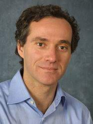 | 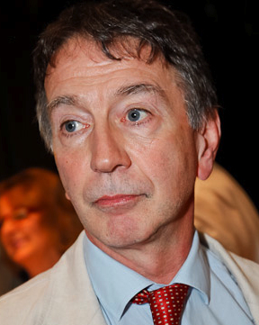 | 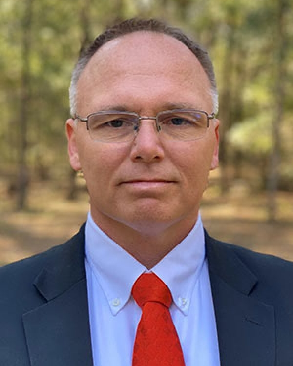 | 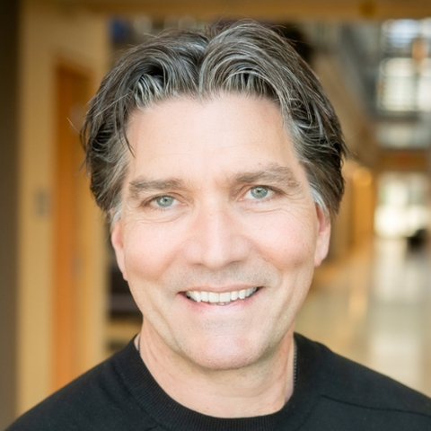 |
| Alessandro Astolfi | Denis Dochain | Warren Dixon | Martin Guay |
|
Imperial College London, UK Universitá di Roma “Tor Vergata”, Italy |
Université Catholique de Louvain, Belgium |
University of Florida, USA |
Queen's University, Canada |
| 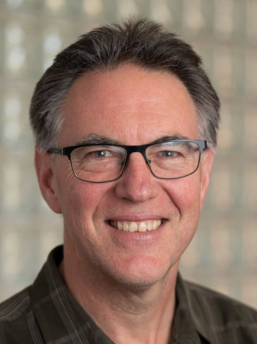 | 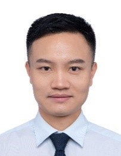 | 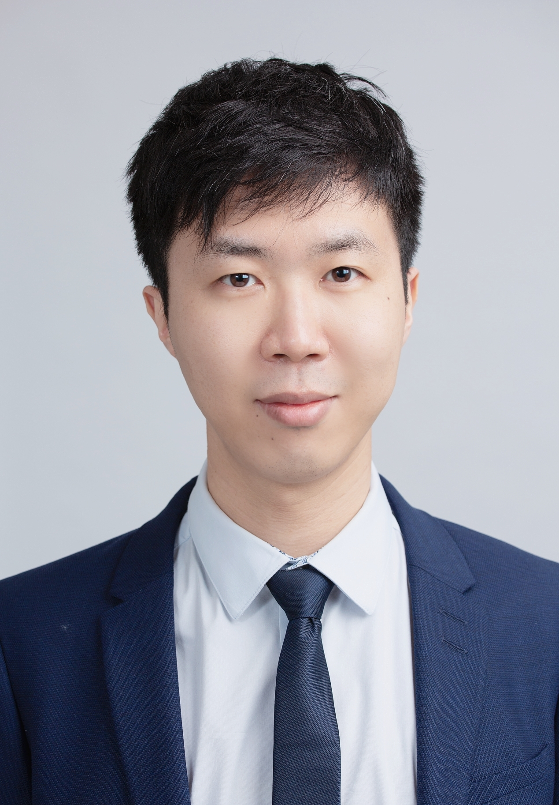 | 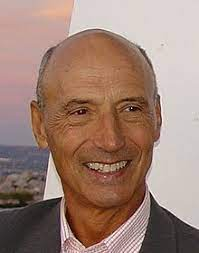 |
| Robert Mahony | Yongping Pan | Bowen Yi | Ioan Doré Landau |
| The Australian National University, Australia |
Sun Yat-sen University, China |
Polytechnique Montréal, Canada |
The French National Centre for Scientific Research (CNRS), France |
| 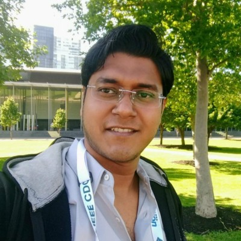 | 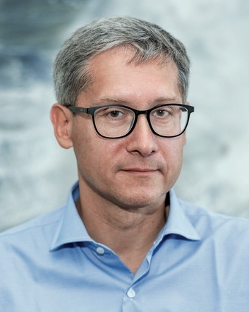 | 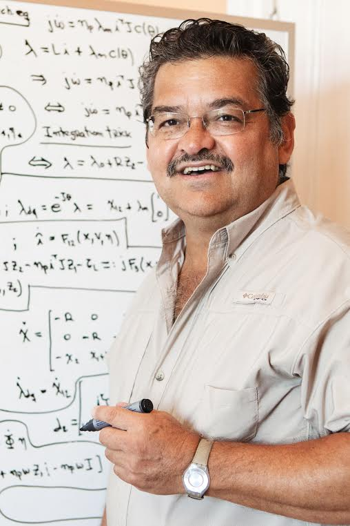 | ||
| Yongping Pan | Bowen Yi | Sayan B. Roy | Alexey Bobtsov | Romeo Ortega |
|
Sun Yat-sen University, China yongppan@gmail.com
|
Polytechnique Montréal, Canada b.yi@outlook.com
|
Indraprastha Institute of Information Technology Delhi, Indiasayan@iiitd.ac.in
|
ITMO University, Russia bobtsov@itmo.ru
|
Instituto Tecnológico Autónomo de México, Mexicoromeo.ortega@itam.mx
|